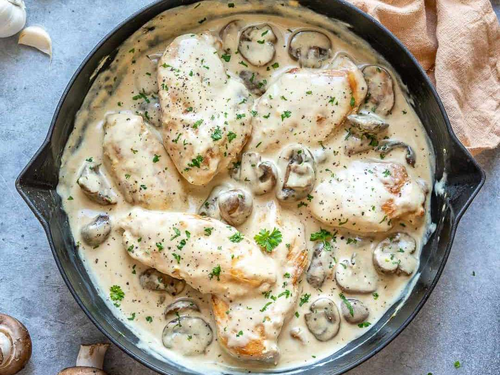

Romantic Chicken

Description
This is Romantic Chicken. It is very good.
You will never find another recipe like this. Here you go!
Ingredients
- 4 skinless, boneless chicken breast halves
- salt and pepper to taste
- 1 tablespoon olive oil
- 1 tablespoon butter
- 1 (14 ounce) can marinated quartered artichoke hearts, drained, liquid reserved
- 1 cup sliced fresh mushrooms
- 1 cup white wine
- 1 tablespoon capers
Steps
- Season chicken with salt and pepper. Heat oil and butter
in a large skillet over medium heat. Brown chicken in oil
and butter for 5-7 minutes per side; remove from skillet, and set aside.
-
Place artichoke hearts and mushrooms in the skillet, and saute until mushrooms are brown and tender.
Return chicken to skillet, and pour in reserved artichoke liquid and wine. Reduce heat to low, and simmer
for about 10-15 minutes, until chicken is no longer pink and juices run clear.
-
Stir in capers, and simmer another 5 minutes. Remove from heat; serve immediately.